minimalpriora spinoff |
Updated | ||
|---|---|---|---|
| Author | Jan Kirchner | ||
Epistemic status : I wrote this to understand how a GiveWell-type analysis feels from the inside[1]. I expect this would require a couple hundred hours of additional research to get to the point where I’d be confident in the conclusions. But I still think the resulting analysis is interesting, so read it like you’d read the Feuilleton. Any feedback is highly appreciated.
Reading Guide : If you’re familiar with the “Cause X” concept, you can skip the “Searching for Cause X” section. You can jump to “Conclusions & FAQ” if you want my conclusions.
Within the effective altruism community, there is a game (in the broadest sense of the word) that goes like this:
Imagine it’s 50 years in the future. Which part of our early 21st-century civilization will make people 50 years from now recoil in horror?
It’s a pretty weird game, as “winning” means that you will start seeing atrocities committed everywhere, which can’t be healthy[2].
[2]
Imagine being transported back into an age where burning witches at the stake is good-natured fun, but having the moral sensibilities of a human of the early 21st century.
But, I argue, the “game” component stems from a dynamic where people come up with the most surprising proposal for unnoticed widespread atrocity (also called “Cause X” since we don’t know what they might be). Proposals include:
Aging. With increasing age, your body tends to accumulate diseases and lose functionality, which is the cause of a lot of suffering. It would be great if your body didn’t do that. Maybe, one day they won’t do that anymore, and we’ll loathe the fact that they once did.
Wild animal welfare. Imagine being a field mouse. Everyone is trying to eat you, food is scarce, and half of your pups don’t make it. This situation is exacerbated by the fact that there are billions in the same situation as you. There is not a lot we can do about it at the moment. But perhaps, there are things we can do at some point in the future, and then it will seem barbaric to let wild animals suffer.
Cluster Headaches. Cluster Headaches are bad[3]. Really bad. Like, “people-call-them-suicide-headache”-level bad. 1 in 1000 people are affected, and most other people don’t even know how bad it is. Perhaps we’ll be able to fix this (and other diseases that cause immense suffering) eventually and wonder how people could ever endure this.
[3]
This has got to be my favorite illustration ever. I mean, apart from depicting horrors beyond comprehension.
These are bound to sound a bit outlandish; the idea of not eating meat probably also sounded very weird to the median person living a century ago. The complete list includes 97 items, and (obviously) not all of them will be hits - and perhaps even none of those will be[4]. But they also don’t have to be! Coming up with candidates for possible Cause X’s and then arguing for or against them is part of the “game”.
[4]
Although watching the cluster headache video gave me a renewed appreciation for a cluster-headache-free life.
In this spirit, here is my contribution. Could it be that 50 years from now, we will look back and say:
“Oh boy, people really used to be blind. How on earth did we miss that the small humans are not alright? We even put all of them together, have them form little tribes and let them fight it out, unsupervised, Lord-of-the-Flies-style? It’s not even their fault, their brains are just going coo-coo at that age! The small humans literally don’t even have properly developed morality yet. Puberty really was the worst.”
“How often do I lull my seething blood to rest, for you have never seen anything so unsteady, so uncertain, as this heart.”
― Johann Wolfgang von Goethe
Here is the short version: 1 in 25 describes high school time as the worst time in their life. Fourteen percent of students reported being victims of bullying. Life satisfaction decreases steadily during adolescence and increases only during the transition to post-comprehensive education. A lot of this bad stuff is linked to forcing kids to go to high school, where a lot of the bullying occurs[5]. There is a disturbing seasonality in teenage suicides that has its high points immediately after school breaks. Reading anecdotes about bad experiences in high school completes the picture.
[5]
This probably looks different now, with even more bullying happening online. But I’d guess it’s still mostly in the context of school.
And now the extended version:
Let us take the possibility seriously that we find out in 50 years that high school is some kind of moral atrocity. Is there a way we can work towards a solution already today?
The 80000 hours project has a framework for tackling this type of question: the ITN framework. When thinking about which vital problem to work on, we might evaluate
There is a more informal and a more formal version of this framework, and my analysis falls somewhere in the middle.
Traditionally, the impact was often measured in QALYs (Quality Adjusted Life Years). But QUALYs are bad because they ask people to imagine how bad certain conditions are. A betteralternative is WELLBYs (Well-being Adjusted Life Years), which derive from asking how people in the condition feel.
One way to measure WELLBYs is via “life satisfaction point years” (LSP), where 1 LSP is equivalent to increasing life satisfaction for one person by one point on a 10 point scale for a year. To illustrate, here is an excerpt from a table from Clark et al. (2018):
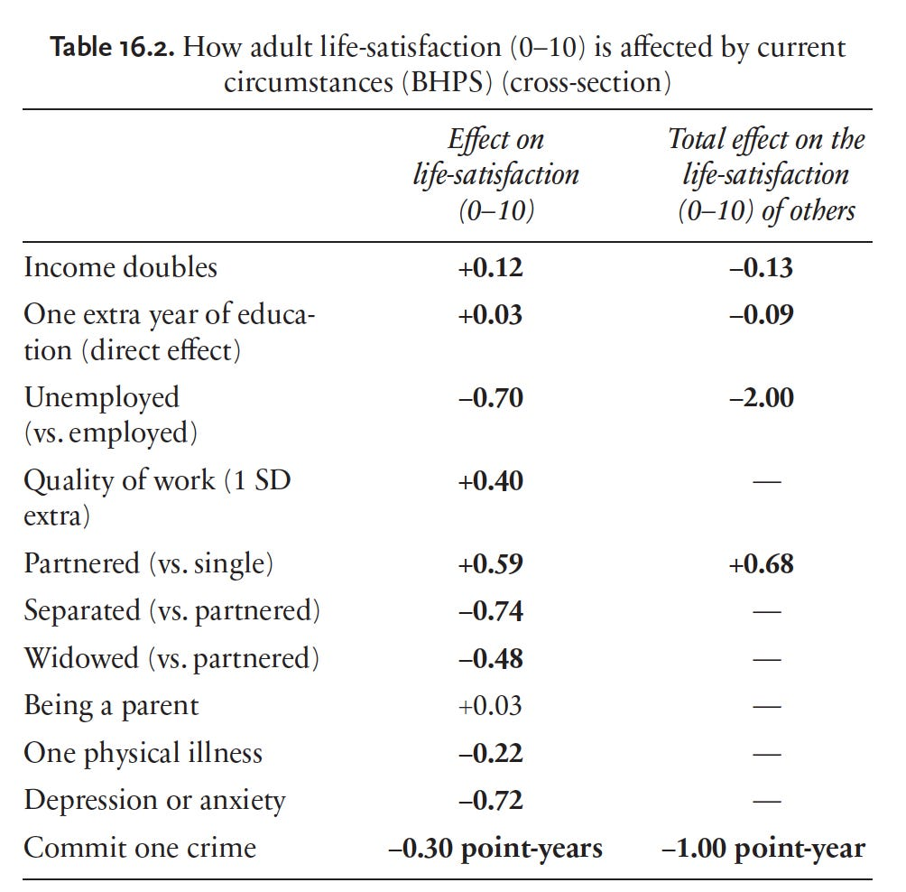Life satisfaction is typically computed on a Likert scale from 0 to 10, which also comes with a bunch of caveats
Conveniently, there is a ton of life satisfaction data for high school time. Here isGoldbeck et al. (2007):
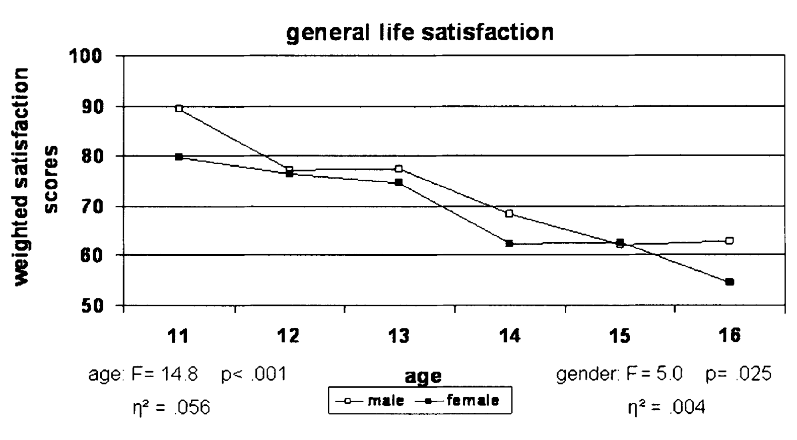
I like them because they have a great sample size (n=1,274 German adolescents), they are from Germany, and they were among the first to rigorously show this effect. I don’t like them because they use a weighted satisfaction score, and I have difficulty figuring out how they computed it. I think it should be between 0 and 100 and then the decrease would be -0.5 per year. But I’m not sure that’s actually it; in other Figures from that paper, the points go above 100.
Herke et al. (2019) is 12 years later but has a fantastic sample size (n=12 564 German adolescents) and explicitly says that they scale the score between 0 and 100:
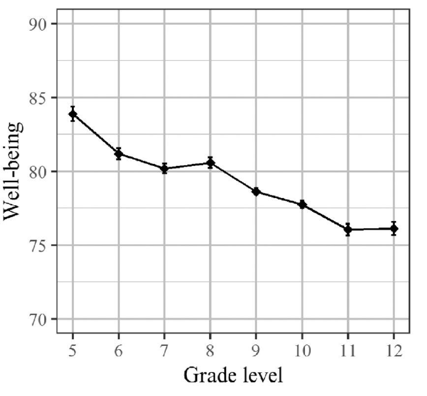
González-Carrasco et al. (2017) have a slightly smaller sample (n=940 Spanish adolescents), but their statistic is easier to interpret:
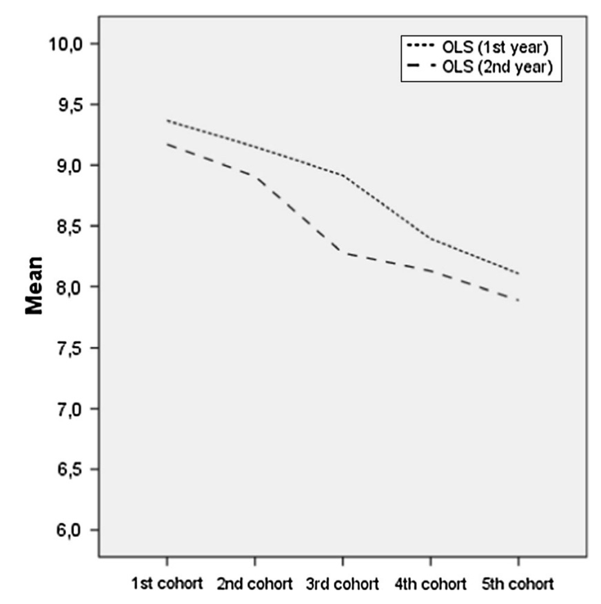
This looks equally damning, again with a -0.5 change in life satisfaction per year. Aymerich et al. (2021) also find this effect (n=600 Spanish adolescents)[6]. Willroth et al. (2021) find no changes from age 14 to age 17 (n=674 Mexica-origin adolescents). This is consistent with the previous studies, where most of the drop occurs before age 14. Uusitalo-Malmivaara (2014) also finds a drop in life satisfaction between ages 12 and 15 (n=339 Finnish adolescents). Still, the effect size looks a lot less impressive (AFAICT only a total change of -0.4 in three years). Proctor et al. (2008) do a meta-study and find that:
[6]
In their data, the drop levels off earlier, though.
global [life satisfaction] tends to decline slightly with the onset and progression of adolescence and [these] findings are similarly supported by international research, including those from: America (e.g. Suldo and Huebner 2004b), Israel (e.g. Ullman and Tatar 2001), South Korea (e.g. Park 2005), and China (e.g. Chang et al. 2003).
Okay, I’m convinced something is going on here. But could it be that children below the age of 10 are just unreasonably super-happy, and the drop in life satisfaction comes from having to confront the harsh reality of the world?
Could be, but these roughly 600 Finnish adolescents about to graduate from school and surveyed by Salmela-Aro et al. (2010) beg to differ:
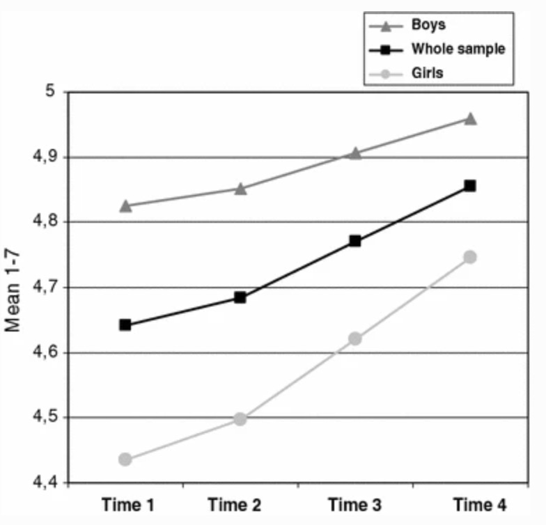
Steinmayr et al. (2019) find the same thing for 476 German adolescents, but their layout for data presentation is basically criminal. Petito et al. (2012) claim that 279 adolescents have lower life satisfaction than adults, but I can’t access their study. When I line all these studies up like this, the story appears relatively straightforward: Life satisfaction drops by one or two points between the age of 11 and 16. Then there is a rebound from 16 to 19.
However, here’s an important note of caution : I’m just a guy (not) reading papers on the internet. I’m not at all confident about my reading of the literature (not my area of expertise at all ), and Luhmann (2017) says that:
any conclusions about the average trajectories of [subjective well-being] in children and adolescents are premature given the lack of studies that follow large-scale samples of children and adolescents over multiple years.
I’m not convinced by the argument they bring forward for this conclusion[7], but they have a Ph.D. in this topic, and I don’t. So if anybody has a more careful reading of the literature, I’d be happy to hear about it!
[7]
The whole passage fromLuhmann (2017) is:
Despite the considerable uncertainty around these numbers, I’d conservatively estimate that, on average, adolescents experience a decrease of -0.2-0.4 LSP relative to baseline between the ages of 11 and 16. How bad is that?
Dolan and Metcalfe (2012) show us the impact of different impairments on life satisfaction.
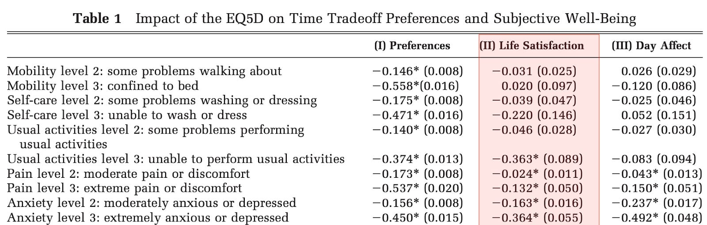
Here life satisfaction is scaled to the range between 0 and 1, so we have to multiply them by 10 to compare these values with the decrease in LSP during adolescence. This would put adolescence in the ballpark of “some problem washing or dressing”, “moderate pain or discomfort”, and “unable to perform usual activities”. Consistently, Clark et al. (2018) from the beginning of this section, adolescence falls somewhere between one physical illness per year (-0.22) and being widowed (-0.48). This describes my experience during adolescence almost perfectly, actually.
This is pretty damning, especially considering that we are talking about the average among adolescents. At the same time, the effect on wellbeing in all the other studies is computed only for the subset of people that stand out for showing symptoms of distress. So every person that had an average or even excellent time during adolescence implies another person that had it proportionally worse.
Joel McGuire from the Happier Lives Institute has a great post on the impact of cash transfers on subjective wellbeing. He performs a careful meta-analysis and finds that a transfer of $1000 to someone living in “global poverty” results in an increase of roughly 0.87 WELLBYs. It’s probably unfair to rip this number from his report without any of the additional qualifications and caveats he provides. Still, this post is already too long as it is.
In summary: I’m already way outside of my intellectual comfort zone, but to put the money where my mouth is and to start a discussion: fixing whatever makes1.2 billion adolescents[8] unhappy (on average) could have the same positive impact as giving 1.2 billion people living in global poverty $1000 each, or relieving 1.2 billion people from moderate pain or discomfort. Any solution that costs less than $1.2 trillion could be considered a “win”.
[8]
The LSF data I looked at stems mostly from adolescents living in the West, so it’s unclear how to extrapolate to the entire world. This PISA report shows that students in Asian countries are even unhappier than those in the West (but they don’t have longitudinal data across adolescence). And this paper looks at bullying across countries and finds that it’s a lot more prevalent in the Eastern Mediterranean and Africa.
This is where the analysis gets a bit hairier[9]. All the data I presented in the previous section is purely correlational and establishes zero causation. Proctor et al. (2009), after doing a thorough meta-analysis of 141 studies on youth life satisfaction, also admit that:
[9]
Scratch that. This was hairy from the beginning.
Additional research is required in order to further discover causal pathways through which personal and environmental factors effect and influence how youths’ perceive their lives.
If we don’t know which factors contribute to the decrease in life satisfaction, we will have difficulty evaluating tractability.
So, instead, let’s tackle the problem one level higher. How can we identify candidate interventions for improving life satisfaction in adolescents? I came up with three categories by imagining that we have solved the problem in 50 years and working back from there.
Angle of attack? While Proctor et al. (2009) are hesitant about naming causal factors, they do highlight several factors that “foster” positive life satisfaction (LS).
Among these [factors] are the fundamentally positive outcomes on LS that emerge as a result of a healthy lifestyle, good physical health, exercise, and participation in sports and social activities. Conversely, non-participation in risk-taking behaviour, including: substance abuse (e.g. alcohol, tobacco, and illicit drugs), violence, aggression, and sexual victimization, is associated with elevated levels of LS. Similarly, environmental quality, such as, living in a safe neighbourhood, residing in a well maintained home, infrequent relocation, good familial and parental relationships, and social support, all engender positive youth LS.
It appears at least plausible that if we manage to provide all these things to teenagers everywhere, teenage suffering might be reduced.
What can we do about it? Ensuring that adolescents collectively experience these positive factors appears rather daunting. But if certain publicintellectuals are correct and life really is getting better and better, then life in the future might indeed ensure a near-perfect environment for (most) teenagers. In particular, I’m thinking of personalized medicine for better health and fitness, solar power taking over for a cleaner environment, a better understanding of complex systems for better communities, …
However, 50 years might appear relatively short without some radical/exponential transformation of the world economy. Thus, the task of reaching this standard of living is probably basically equivalent to solving AI Safety.
Angle of attack: When reading the summary from Proctor et al. (2009), I was surprised to find only minimal mention of the common factor from almost all anecdotal reports: bullying[10]. One possible (though surprising) explanation for this is that, according to Lázaro-Visa et al. (2019),
[10]
Or, as a friend charmingly called it: Averse behavior in small person environments.
The study of bullying in relation to perceived life satisfaction has only recently begun to be addressed.
These recent studies suggest indeed what one might intuitively suppose: bullying bad. Through regression analysis, these studies report effect sizes ranging from -0.2 (Lázaro-Visa et al. 2019) via -0.5 (Nozaki 2019), up to -4 (!?) (Varela et al. 2021) on life satisfaction (scaled to 0-10). I’d love to see a meta-analysis of this to determine which of these numbers hold up. But suppose one of the larger numbers holds up. In that case, this effect on the fourteen percent of students reported being the victims of bullying might well explain away the average decrease in life satisfaction across all adolescents.
What can we do about it? This space is a little bit crowded. There are threedifferent anti-bullying days, an anti-bullying week, the Bullying-Prevention Month (it’s October), more anti-bullyingcharitiesthanstarsintheuniverse,…
And they appear to be doing something! According to data byDue et al. (2019), there was a large drop in the percentage of Danish adolescents exposed to bullying in the late 90s (the authors don’t know why this is, but believe it’s due to raised awareness[11]), and a more moderate decline afterward.
[11]
Here’s the relevant passage:
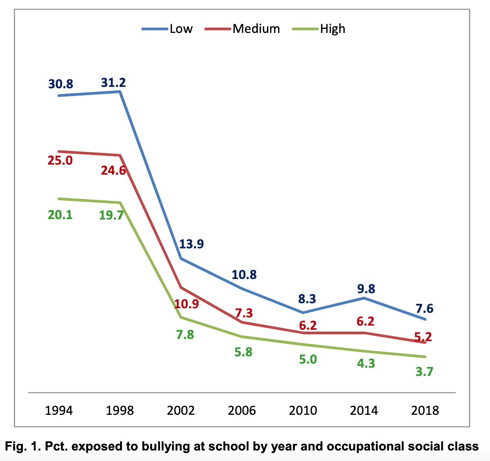
The slow decline since the early 2000s is also mirrored in data from the U.S., although the baseline is higher, around 30%. I like to believe that this is because the Danish are just friendlier by nature, but, realistically, it’s probably due to differences in definition[12]. A slow but steady decline might make us hopeful that the problem will dissolve itself in 50 years. Unfortunately, statistics on cyberbullying look a bit less promising[13].
[13]
Strongly fluctuating between 2007 and 2019 without a clear trend either way.
[12]
I think this data would suggest at least two tests for the hypothesis that “bullying drives lowered life satisfaction”.
Assuming that bullying will level off at a nonzero, constant rate, we might need additional interventions beyond awareness campaigns to protect the victims of bullying. Anonymous surveillance, if implemented reliably, might provide the tools to identify destructive social dynamics before they escalate into bullying dynamics. However, maintaining anonymity when resolving these dynamics is challenging.
While the previous interventions attempt to tackle the problem at the societal level, not all of the factors leading to suffering during puberty are due to external factors. In particular, I’ve already alluded to the fact that the brain of adolescents has to go through a lot during puberty. Conventionalwisdom backed up by evidence is that the grey matter of the frontal cortex (containing cell bodies of neurons) grows more prominent and then shrinks again during puberty.
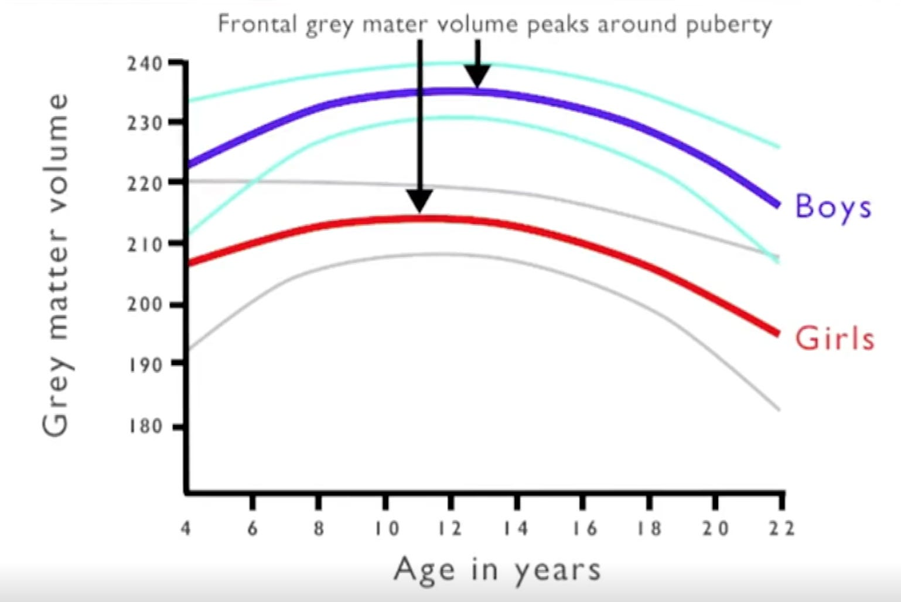source
This might explain why teenagers are weird and make bad decisions, but not necessarily why they might be unhappy.
The other conventional wisdom is that the amygdala, a region of the brain primarily associated with emotional processes, is also strongly affected by puberty. This is the case in rats, hamsters, and, thanks to Sorrells et al. (2019), we know that this is the case in humans.
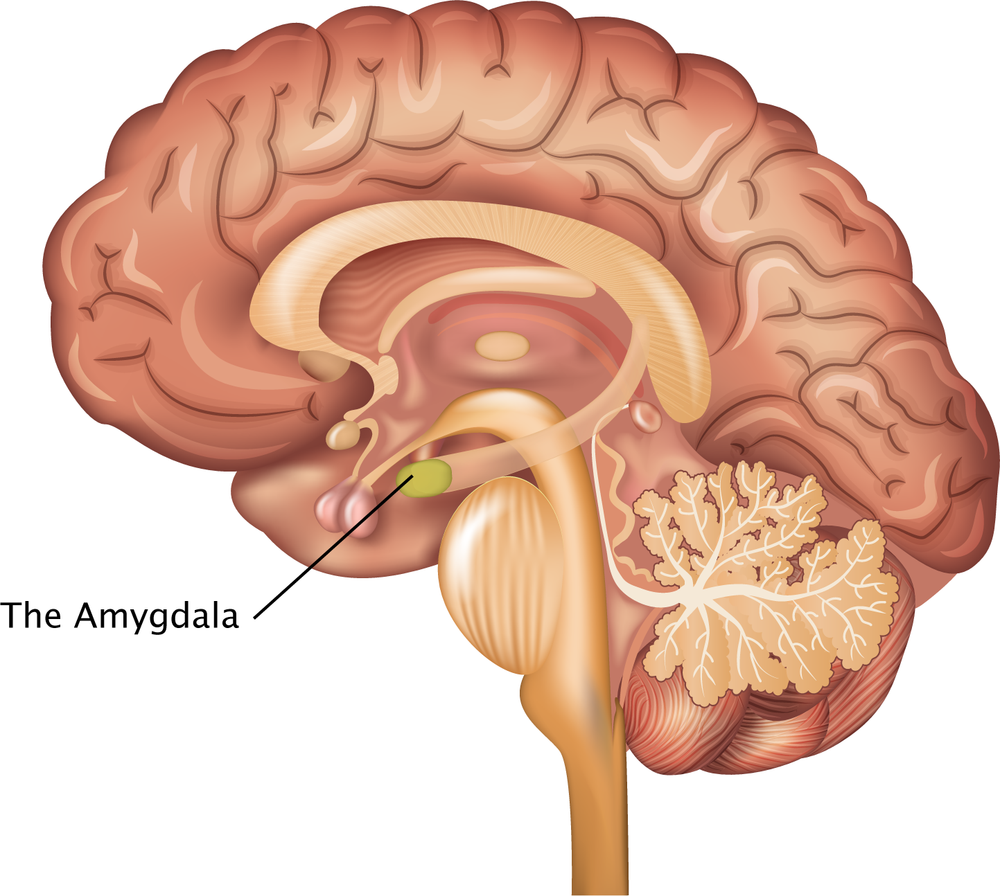
Changes in the amygdala could totally explain why teenagers are unhappy. We also suspect differences between the left and the right amygdala. We suspect there might be differences between males and females. Beyond this, it is still exceedingly unclear how the amygdala (and the limbic system in general) and we don’t know a lot more beyond this.
What can we do about it? There might be pharmacological (or non-obvious lifestyle) interventions to soften the emotional blow of puberty without affecting any of the necessary developmental processes. Some researchers call for “aging” to be classified as a disease. Perhaps an analogous argument can be made for puberty. Further research on this question (particularly on the amygdala’s role in puberty) could help clarify the situation and potentially even lead to interventions to alleviate suffering during adolescence[14].
[14]
While perhaps feasible from a technical point of view, it is unclear whether extensive medication of teenagers is a desirable outcome.
Here are my key takeaways:
Adolescence comes with substantial suffering for a large fraction of humanity.
Impact : Taking published data on life satisfaction scores during adolescence seriously, “solving” adolescents’ suffering might well be cost-effective up to a cost of one trillion dollars.
Tractability : We do not have simple and/or highly effective strategies to tackle the problem.
* Ideas might come from a societal angle (improving factors that alleviate adolescents’ suffering), group dynamics angle (reducing school bullying and cyberbullying), or individual angle (understanding the developmental factors underlying puberty).* The basic research on the neuroscience of suffering during adolescence appears neglected and could be accelerated.I’ve been bugging people for a long while with the idea that we might look back at puberty and shudder in horror. I tend to receive the same responses, so I have a FAQ:
Q: Is puberty really that bad? My experience wasn’t that bad.
A: My experience also wasn’t that bad; I was mostly bored. But I know some people for who it was terrible. And the statistics also don’t look great.
Q: Really really? I don’t even remember seeing anything too terrible. Are people just blowing this out of proportion?
A: A lot of this stuff is hidden in plain sight, and if you don’t know what to look for, you might not notice it. This might just be one of those situations where different sets of people have entirely different experiences about the world.
Q: But adolescence also has good aspects! It’s exciting that so many things are changing, and you rediscover yourself and your relationship with the world…
A: No, no, I’m with you. If we optimize away what makes us human, it’s no optimization after all.
But vegetarians can still have delicious food! Same-sex marriage does not subtract from more “traditional” models. Reducing plastic waste does not have to mean giving up on the comforts of modern life. Perhaps we can have adolescence without some of the bad stuff.
Q: I think you are thinking about this from the wrong perspective. Adolescence is supposed to suck. Adolescence is… like bootcamp. You know. It’s tough, but it makes you strong. There are some hard lessons you just have to learn. It sucks that some people have a bad time, but perhaps that’s just how it has to be?
A: You sound like the kind of person who enjoys getting hit on the head with a baseball bat. I feel like the fictive person I’m having this conversation with is no longer arguing in good faith.
Q: Okay, okay, I admit, perhaps there are some things that could be better. But this problem appears suuuuper intractable. Adolescence is such a fundamental thing…
A: Zero tractable for now. More tractable thanelectron suffering[15]. I can totally imagine that in 50 years we have designed mechanisms to protect small humans from each other. And perhaps there is something we can do already today to work in that direction.
[15]
Also a lot more likely to actually be an issue. Less neglected, though, admittedly.
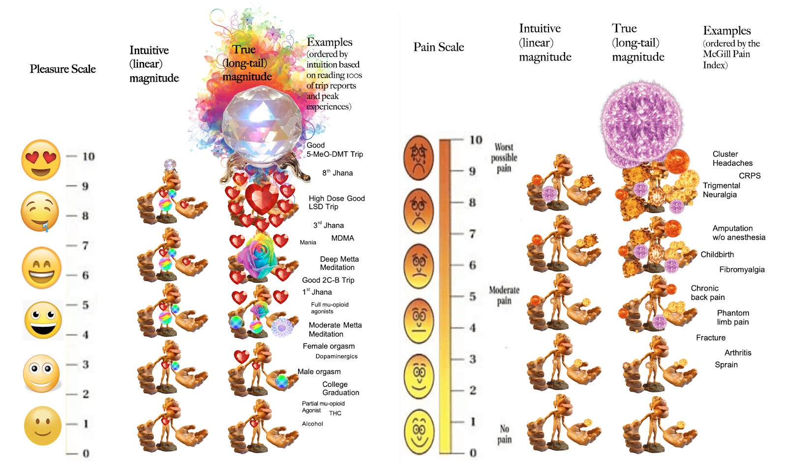
Only a few studies have examined age differences in SWB in adolescence systematically. A consistent cross-sectional finding is that life satisfaction is lower (Goldbeck, Schmitz, Besier, Herschbach, & Henrich, 2007; Moksnes, Løhre, & Espnes, 2013; Weber, Ruch, & Huebner, 2013) and depressive mood is higher (Costello, Swendsen, Rose, & Dierker, 2008) in mid-adolescence than in early adolescence. However, in a longitudinal study of American 6th to 12th graders followed over 2 years, average levels of life satisfaction did not change significantly over this period (Lyons, Huebner, Hills, & Van Horn, 2013). Furthermore, a longitudinal study of Finnish highschool students found increasing average life satisfaction levels from 9th grade until 2 years later (Salmela-Aro & Tuominen-Soini, 2010). In sum, any conclusions about the average trajectories of SWB in children and adolescents are premature given the lack of studies that follow large-scale samples of children and adolescents over multiple years. The remainder of this chapter therefore focuses on the development of SWB from early adulthood to old age, on which more and better studies are available.
Due to the speed of light and the resulting impossibility of time travel, they don’t take Herke et al. (2019) into account, which has a great sample size and clearly shows the effect. But even without that strong data point, I’m confused why they regard Salmela-Aro et al. (2010) as evidence against the trend - the age range studied there is much later than in all the other studies. So it’s no evidence against a decline; it’s evidence for a decline followed by a rebound.
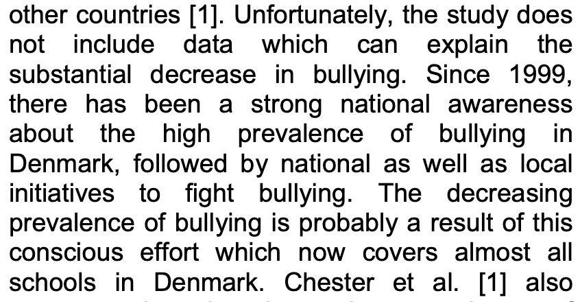
[1]
Potentially, a recent comment on a LessWrong post of mine might have also triggered something in me.